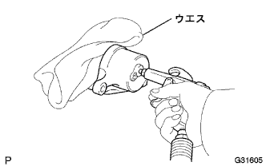

フロントブレーキ 分解 |
| 1. シリンダブーツ取りはずし |
マイナス薄刃ドライバーを使用して、フロントディスクブレーキピストンセットリングを取りはずす。
フロントディスクブレーキシリンダからシリンダブーツを取りはずす。
| 2. フロントディスクブレーキ ブリーダプラグ キャップ取りはずし |
| 3. フロントディスクブレーキ ピストン取りはずし |
|  |
フロントディスクブレーキピストンとフロントディスクブレーキシリンダの間に、傷つき防止用のウエスをはさむ。
エアガンを使用して、ブリーダプラグ取り付け穴からエアを徐々に吹き込み、フロントディスクブレーキシリンダからフロントディスクブレーキピストンを取りはずす。
| 4. ピストンシール取りはずし |
マイナス薄刃ドライバーを使用して、ピストンシールを取りはずす。
| 5. フロントディスクブレーキ ブリーダ プラグ取りはずし |